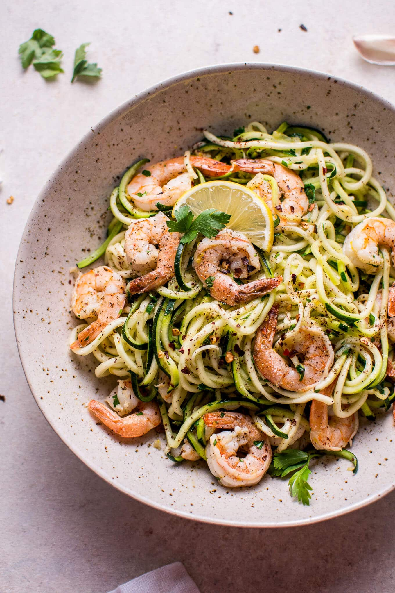

15 Minute Garlic Shrimp Zoodles

Have you had Garlic Shrimp Zoodles?
Want a fast low-carb meal that's healthy and tasty? Try these 15 minute garlic shrimp zoodles. You've been waiting for the day that zoodles make it to this blog, right? Ok, you probably haven't. I'm making use of my Christmas spiralizer, and here they are in all their glory. Garlic + shrimp + zucchini noodles = low-carb heaven.I actually find the term "zoodles" a bit weird since I grew up with those zoo animal shaped pasta pieces in a tomato sauce in a can, and they were called Zoodles. I personally preferred Alphagetti because I could spell out rude words, but I was a bad child.
Ingredients Needed
- 2 medium zucchini
- 3/4 pounds medium shrimp (peeled and deveined)
- 1 tablespoon
- Juice and zest of 1 lemon
- Red Pepper Flakes (optional)
- Salt & pepper to taste
- Fresh Chopped Parseley
How to whip it up!
- Spiralize the zucchini on the medium setting. Set aside.
- Add the olive oil and lemon juice & zest to a skillet on medium heat. Once the pan is warm, add the shrimp. Cook the shrimp for one minute per side.
- Add the garlic and red pepper flakes. Cook for an additional minute, stirring often.
- Add the zucchini noodles and stir/toss (e.g. with tongs) constantly for 2-3 minutes until they're slightly cooked and warmed up.
- Season with salt and pepper and sprinkle with the chopped parlsey. Serve immediately.